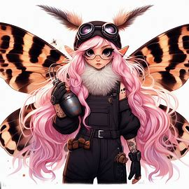

Welcome to my portfolio of captivating digital experiences.
Explore my work and let's create something
extraordinary together.

About me
I'm Sara Jones, a UI/UX designer dedicated to crafting intuitive and visually stunning digital
experiences. With a passion for user-centric design, I transform ideas into functional and beautiful
interfaces. Let's collaborate and shape the future of design together.
502
Projects done
10+
Years of experience
273+
Clients Served
Services
Explore my design services, from user interface and experience to prototyping and testing. Let's craft
exceptional digital experiences together.
Design
I specialize in web development
and design, creating visually appealing,
user-friendly digital experiences.
Branding
I'm a branding expert, crafting
unique visual identities that tell
your story and resonate with your
audience.
UX Research
I specialize in user experience
research, collaborating on web
development, and ensuring user-
friendly digital products.
Usability Testing
I perform usability testing and
optimize designs websites based on real-user feedback
for seamless interactions.
My portfolio
Explore my design services, from user interface and experience to prototyping and testing. Let's craft
exceptional digital experiences together.
Educational Platform
Web Design / Usability Testing
Travel App Design
Ux Research/App Design
Personal Page
Web Design
Furniture Mobile App
App Design
Coffee House Landing Page
UX Research/Web Design
Home Services Page
Web design/Marketing
Core Design Skills
I excel in essential design skills, creating visually stunning and functional digital experiences. From UI
design to UX research, my passion is to craft effective and memorable digital solutions.
Get in Touch
Have a question or a project in mind? I'd love to hear from you. Let's
chat and make something amazing together.